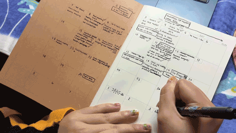
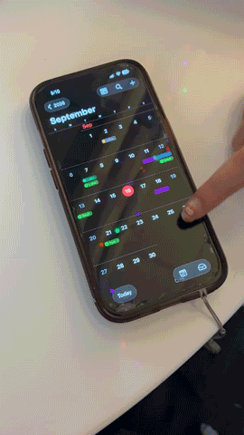

i use a physical planner (formatted monthly in the form of a calendar) from muji, and i also use google calendar.
i use a physical planner (the muji one) to write down my homework. the act of writing deadlines down onto paper helps me remember it more, and there's less clutter compared to a digital one.

there's so much homework that when it's all laid out digitally, it looks overwhelming to me. so, i prefer to handwrite it instead.
digitally, i use my google calendar for events. it seems to be more of an online thing unless i really care about it, then i put it in my physical notebook or planner (ie, six flags).
i sometimes write my assignments or deadlines into a random notebook if i do not have my planner on me.
usually, i would write my homework and dates down on a random planner where i drew columns of five for each day of the week but,,, since i recently got an actual planner, i'm seeing if it will work better for me.

my planner is also more of a home thing and it helps me re-center, so i don't take it out of the dorms.
i sometimes forget major events so i would use the default apple calendar to manually note down birthdays, holidays, or reminders for events. if the school made an event, then i would use google calendar as it would automatically appear there.
both my personal and school account is being used on google calendar, so i see all events for both off- and on-campus. although, i do not often rely on calendars and schedules, it's just for memory purposes.
i don't often procrastinate on my school work as i do my homework as soon as it's assigned, so i mostly write it down because i am afraid of forgetting. i also write down my hangouts for the same reason.
i want to get into the habit of writing dates down though, so that i can remember events and happenings unrelated to academics.
i'm someone who prioritizes time-management, so i am proud of my ability to stay on top of my assignments as i am strict with my time. and, my goal is to find time in my day (or schedule) to take breaks - like actual breaks, not completing other work as a break from another.
my usual breaks would usually be to stop doing one work to start or complete another work.